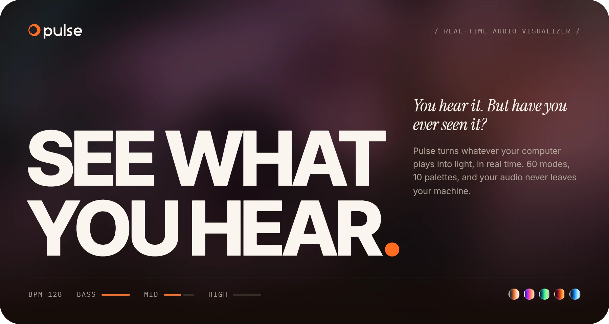

<!doctype html>
<html lang="en">
<head>
<meta charset="utf-8">
<title>Profile tiles</title>
<link href="https://fonts.googleapis.com/css2?family=Geist+Mono:wght@400;500&family=Host+Grotesk:wght@300..800&display=block" rel="stylesheet">
<style>
  /* One tile per render: tiles.html?tile=<id>&theme=<light|dark>. render.sh writes .github/assets/tiles/<id>-<theme>.png.
     Transparent margin around the card so tiles placed edge to edge in the README get a gap. */
  :root {
    --card: #ffffff; --border: #e3e3e3; --well: #f5f5f6; --ink: #0a0a0a; --soft: #525252; --faint: #8a8a8a;
    --line: #d9d9d9; --hair: #e9e9e9; --accent: #5a45b9; --accent-soft: #e9e8ff; --node: #ffffff;
  }
  .dark {
    --card: #0a0a0a; --border: #2a2a2a; --well: #141414; --ink: #f3f3f3; --soft: #aaaaaa; --faint: #767676;
    --line: #3a3a3a; --hair: #262626; --accent: #9388ec; --accent-soft: #29215a; --node: #0a0a0a;
  }
  * { margin: 0; padding: 0; box-sizing: border-box; }
  html, body { background: transparent; }
  body { font-family: 'Host Grotesk', sans-serif; -webkit-font-smoothing: antialiased; color: var(--ink); }

  .tile { padding: 5px; }
  .card { background: var(--card); box-shadow: inset 0 0 0 1px var(--border); display: flex; flex-direction: column; }
  .stage { background: var(--well); overflow: hidden; position: relative; }
  .stage svg { display: block; width: 100%; height: 100%; }
  .mono { font-family: 'Geist Mono', monospace; }

  .big { width: 420px; height: 340px; }
  .big .card { height: 330px; border-radius: 20px; }
  .big .stage { margin: 10px 10px 0; height: 206px; border-radius: 12px; }
  .big .cap { padding: 13px 18px 0; }
  .big h3 { font-weight: 450; font-size: 20px; letter-spacing: -0.02em; display: flex; justify-content: space-between; align-items: baseline; }
  .big h3 .mono { font-size: 11.5px; color: var(--faint); letter-spacing: 0; }
  .big p { margin-top: 4px; font-size: 13.2px; line-height: 1.4; color: var(--soft); }
  .big .stack { margin-top: 7px; font-size: 11px; color: var(--faint); }

  .small { width: 210px; height: 236px; }
  .small .card { height: 226px; border-radius: 16px; }
  .small .stage { margin: 8px 8px 0; height: 150px; border-radius: 10px; }
  .small .cap { padding: 10px 12px 0; }
  .small h3 { font-weight: 450; font-size: 15.5px; letter-spacing: -0.015em; }
  .small .stack { margin-top: 3px; font-size: 10.5px; color: var(--faint); }

  .stage img { width: 100%; height: 100%; object-fit: cover; object-position: 0% 50%; display: block; }

  .code { position: absolute; inset: 0; padding: 13px 12px; font-size: 8.3px; line-height: 1.58; color: var(--soft); white-space: pre; }
  .code .k { color: var(--ink); }
  .code .s { color: var(--accent); }
  .code .c { color: var(--faint); }
</style>
</head>
<body>
<div id="root"></div>
<script>
const q = new URLSearchParams(location.search);
const id = q.get('tile') || 'pulse';
if (q.get('theme') === 'dark') document.documentElement.classList.add('dark');

const tiles = {
  pulse: { size: 'big', title: 'Pulse', meta: 'github', stage: '',
    text: 'Real-time audio visualizer with HDR bloom, playlists and native audio capture on Windows.',
    stack: 'React · three.js · Tauri · Rust' },
  dendree: { size: 'big', title: 'Dendree', meta: 'dendree.com', stage: dendreeSketch(),
    text: 'Our studio’s own platform: one sign-in for every app, time tracking, webmail and accounts.',
    stack: 'Next.js · FastAPI · Supabase · Terraform' },
  speech: { size: 'small', title: 'Speech in noise', stage: speechChart(), stack: 'Python · Whisper · Piper' },
  databack: { size: 'small', title: 'DataBack', stage: databackCode(), stack: 'Java · PostgreSQL' },
  waste: { size: 'small', title: 'Waste classifier', stage: wasteSketch(), stack: 'Python · Jupyter' },
  sdi: { size: 'small', title: 'Infrastructure as code', stage: sdiCode(), stack: 'Terraform · Hetzner' },
};

const t = tiles[id];
document.getElementById('root').innerHTML = `
  <div class="tile ${t.size}"><div class="card">
    <div class="stage">${t.stage}</div>
    <div class="cap">
      <h3>${t.title}${t.meta ? `<span class="mono">${t.meta} ↗</span>` : ''}</h3>
      ${t.text ? `<p>${t.text}</p>` : ''}
      <div class="stack mono">${t.stack}</div>
    </div>
  </div></div>`;

/* Dendree: the apps that share one sign-in, on one server. */
function dendreeSketch() {
  const apps = ['dendree.com', 'time', 'accounts', 'mail'];
  const w = 400, x0 = 22, gap = 8, pw = (w - 2 * x0 - 3 * gap) / 4;
  let s = `<svg viewBox="0 0 400 206" xmlns="http://www.w3.org/2000/svg" font-family="Geist Mono, monospace">`;
  apps.forEach((a, i) => {
    const x = x0 + i * (pw + gap), cx = x + pw / 2;
    s += `<path d="M${cx} 54 C ${cx} 78, 200 70, 200 96" fill="none" stroke="var(--line)" stroke-width="1"/>`;
    s += `<rect x="${x}" y="26" width="${pw}" height="28" rx="14" fill="var(--card)" stroke="var(--line)"/>`;
    s += `<text x="${cx}" y="44" text-anchor="middle" font-size="10.5" fill="var(--ink)">${a}</text>`;
  });
  s += `<rect x="110" y="96" width="180" height="32" rx="16" fill="var(--card)" stroke="var(--accent)"/>`;
  s += `<circle cx="128" cy="112" r="4" fill="var(--accent)"/>`;
  s += `<text x="206" y="116" text-anchor="middle" font-size="10.5" fill="var(--ink)">auth.dendree.de</text>`;
  s += `<path d="M200 128 V 150" stroke="var(--line)"/>`;
  s += `<path d="M150 150 H 250" stroke="var(--line)"/><path d="M150 150 V 158 M250 150 V 158" stroke="var(--line)"/>`;
  s += `<rect x="96" y="158" width="108" height="26" rx="13" fill="var(--card)" stroke="var(--line)"/>`;
  s += `<text x="150" y="175" text-anchor="middle" font-size="10" fill="var(--soft)">Supabase</text>`;
  s += `<rect x="196" y="158" width="108" height="26" rx="13" fill="var(--card)" stroke="var(--line)" transform="translate(8 0)"/>`;
  s += `<text x="258" y="175" text-anchor="middle" font-size="10" fill="var(--soft)">Hetzner</text>`;
  return s + `</svg>`;
}

/* Speech: word error rate over signal-to-noise ratio, values from output/charts/wer_vs_snr.png. */
function speechChart() {
  const snr = [0, 5, 10, 15, 20];
  const series = [
    { name: 'white', v: [24.3, 9.5, 5.3, 3.9, 3.2], c: 'var(--ink)' },
    { name: 'pink', v: [18.2, 7.2, 4.5, 3.6, 3.2], c: 'var(--faint)' },
    { name: 'blue', v: [10.5, 5.7, 4.1, 3.4, 3.2], c: 'var(--accent)' },
  ];
  const L = 26, R = 182, T = 18, B = 122;
  const x = s => L + (s / 20) * (R - L), y = v => B - (v / 26) * (B - T);
  let s = `<svg viewBox="0 0 194 150" xmlns="http://www.w3.org/2000/svg" font-family="Geist Mono, monospace">`;
  [0, 10, 20].forEach(v => s += `<path d="M${L} ${y(v)} H ${R}" stroke="var(--hair)"/><text x="${L - 5}" y="${y(v) + 3}" text-anchor="end" font-size="7.5" fill="var(--faint)">${v}</text>`);
  snr.forEach(v => s += `<text x="${x(v)}" y="${B + 12}" text-anchor="middle" font-size="7.5" fill="var(--faint)">${v}</text>`);
  s += `<text x="${L}" y="11" font-size="7.5" fill="var(--faint)">WER %</text><text x="${R}" y="146" text-anchor="end" font-size="7.5" fill="var(--faint)">SNR dB</text>`;
  series.forEach(se => {
    s += `<polyline fill="none" stroke="${se.c}" stroke-width="1.5" points="${se.v.map((v, i) => `${x(snr[i])},${y(v)}`).join(' ')}"/>`;
    se.v.forEach((v, i) => s += `<circle cx="${x(snr[i])}" cy="${y(v)}" r="2" fill="${se.c}"/>`);
  });
  [['white', 'var(--ink)'], ['pink', 'var(--faint)'], ['blue', 'var(--accent)']].forEach(([n, c], i) => {
    s += `<circle cx="${128}" cy="${24 + i * 11}" r="2.2" fill="${c}"/><text x="${134}" y="${27 + i * 11}" font-size="7.5" fill="var(--soft)">${n} noise</text>`;
  });
  return s + `</svg>`;
}

/* DataBack: incremental PostgreSQL backups from the terminal (commands from its README). */
function databackCode() {
  return `<div class="code mono"><span class="c">$</span> <span class="k">databack backup</span> --db-url …/shop
  <span class="c">v1</span>  full backup
  <span class="c">v2</span>  changes only
  <span class="s">v3  changes only</span>

<span class="c">$</span> <span class="k">databack restore</span> --version v2
  <span class="c">restored</span> v2</div>`;
}

/* Waste: the classes the model chooses between, one picked. */
function wasteSketch() {
  const classes = [['Deposit bottle', 1], ['Paper', 0], ['Plastic', 0], ['Residual waste', 0], ['Not waste', 0]];
  let s = `<svg viewBox="0 0 194 150" xmlns="http://www.w3.org/2000/svg" font-family="Geist Mono, monospace">`;
  s += `<rect x="12" y="14" width="60" height="78" rx="6" fill="var(--card)" stroke="var(--line)"/>`;
  s += `<path d="M36 30 h12 v8 c6 4 8 8 8 14 v28 c0 3 -2 5 -5 5 h-18 c-3 0 -5 -2 -5 -5 v-28 c0 -6 2 -10 8 -14 z" fill="none" stroke="var(--soft)" stroke-width="1.2"/>`;
  s += `<text x="42" y="106" text-anchor="middle" font-size="7.5" fill="var(--faint)">photo</text>`;
  s += `<path d="M76 53 H 86" stroke="var(--line)"/><path d="M83 50 L86 53 L83 56" fill="none" stroke="var(--line)"/>`;
  classes.forEach(([n, on], i) => {
    const y = 18 + i * 22;
    s += `<rect x="92" y="${y}" width="90" height="16" rx="8" fill="${on ? 'var(--accent)' : 'var(--card)'}" stroke="${on ? 'var(--accent)' : 'var(--line)'}"/>`;
    s += `<text x="100" y="${y + 11}" font-size="7.6" fill="${on ? '#ffffff' : 'var(--soft)'}">${n}</text>`;
  });
  return s + `</svg>`;
}

/* SDI: an excerpt of exercises/13-incrementally-creating-a-base-system/main.tf. */
function sdiCode() {
  return `<div class="code mono"><span class="c">$ terraform apply</span>

<span class="k">resource</span> <span class="s">"hcloud_server"</span> <span class="s">"hello"</span> {
  image       = <span class="s">"debian-13"</span>
  server_type = <span class="s">"cx23"</span>
}

<span class="k">resource</span> <span class="s">"hcloud_firewall"</span> <span class="s">"ssh"</span> {
  rule { port = <span class="s">"22"</span> }
}</div>`;
}
</script>
</body>
</html>
